Tsukiji Fish Market
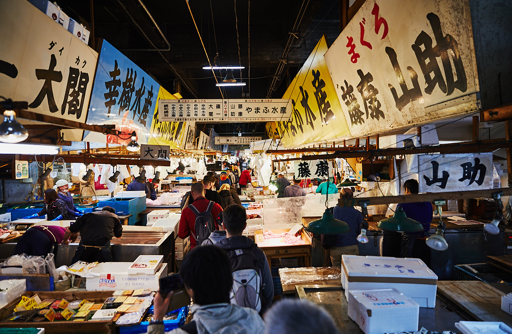
One of the most eye opening things I did while I was in Japan was exploring the Tsukiji Fish Market. As the world's largest wholsesale fish and seafood market it's definitely one of a kind.
The market is divided into the inner and outer markets; the inner market is inside this massive warehouse where all fresh seafood is sold by merchants in their stalls, while the outer market consists mostly of seafood and sushi restaurants as well as little stores selling a variety of goods ranging from seafood to kitchen utensils.
The inner market isn't usually open to tourists until much later in the morning in order to allow seafood buyers and locals to do their shopping undisturbed by the masses of tourist that inevitably clog up the market.
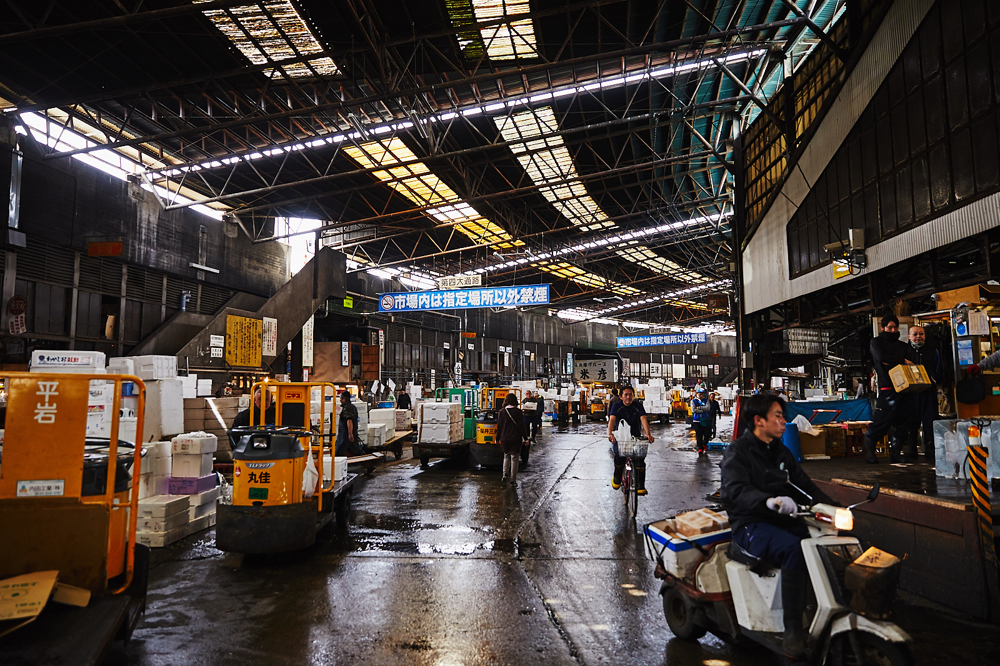
I actually ended up getting lost and wandered into the inner market before I was allowed to and managed to steal a glance at the massive number of carts, trolleys, and merchants making their daily purchase of fresh seafood.
Once opened to the public, we were guided inside and told to continue moving so as to not block any aisles. The sheer number of tourists that this market attracts is unbelieveable, and it becomes immediately obvious why tourists are not allowed in until close to noon.
Seeing the merchants at their stalls with their daily catch was a truly eye-opening and humbling experience.
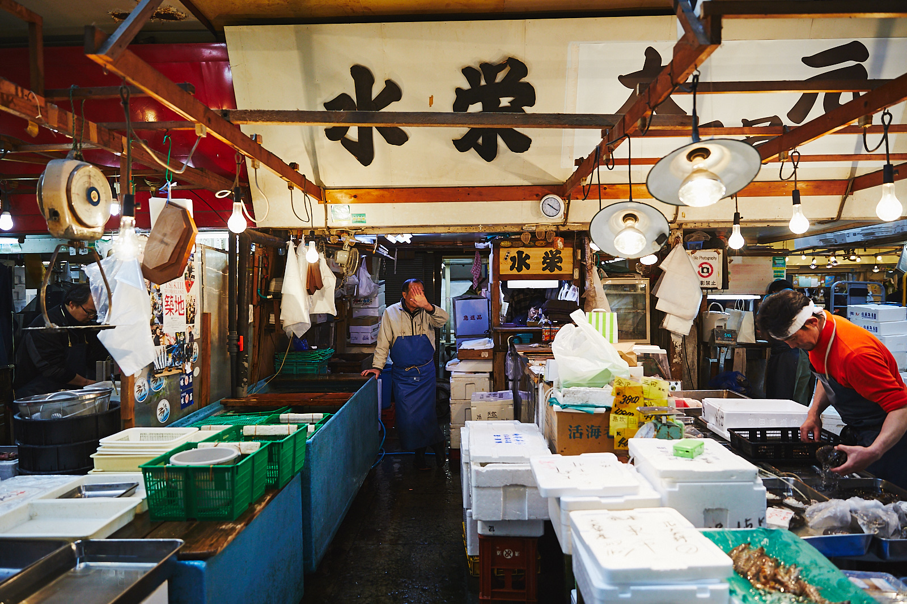 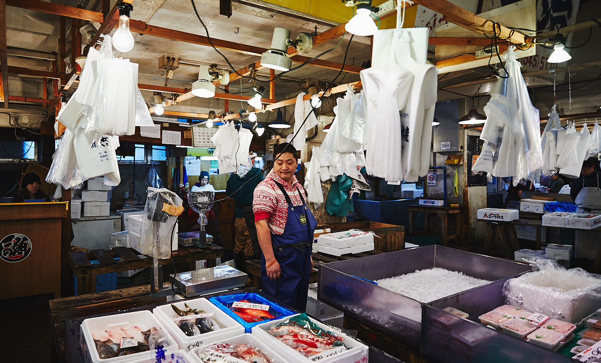 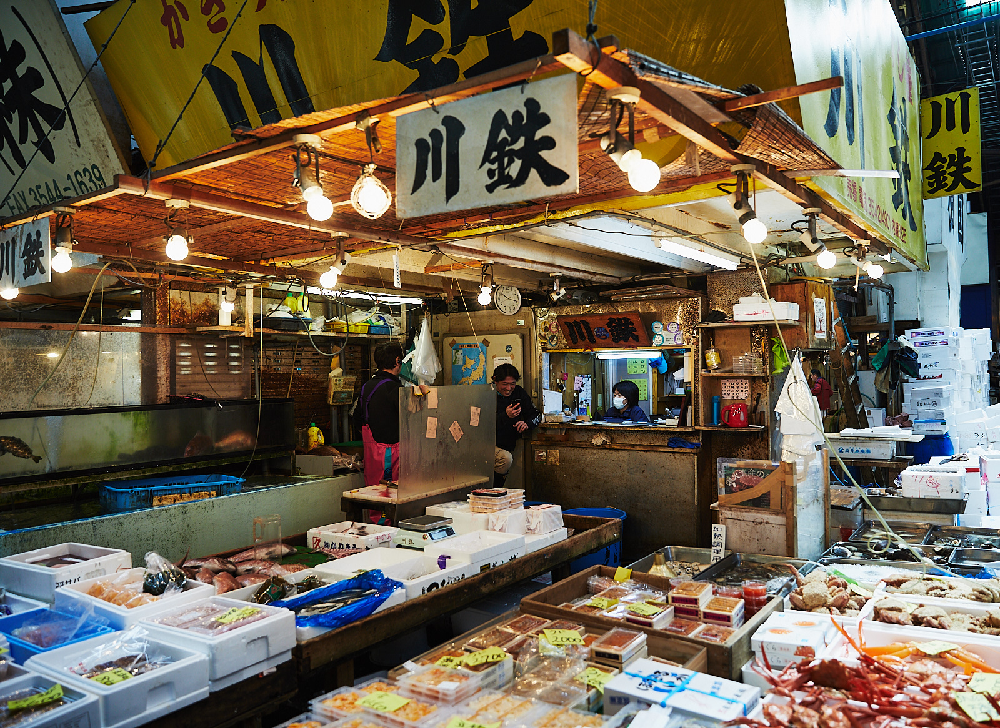 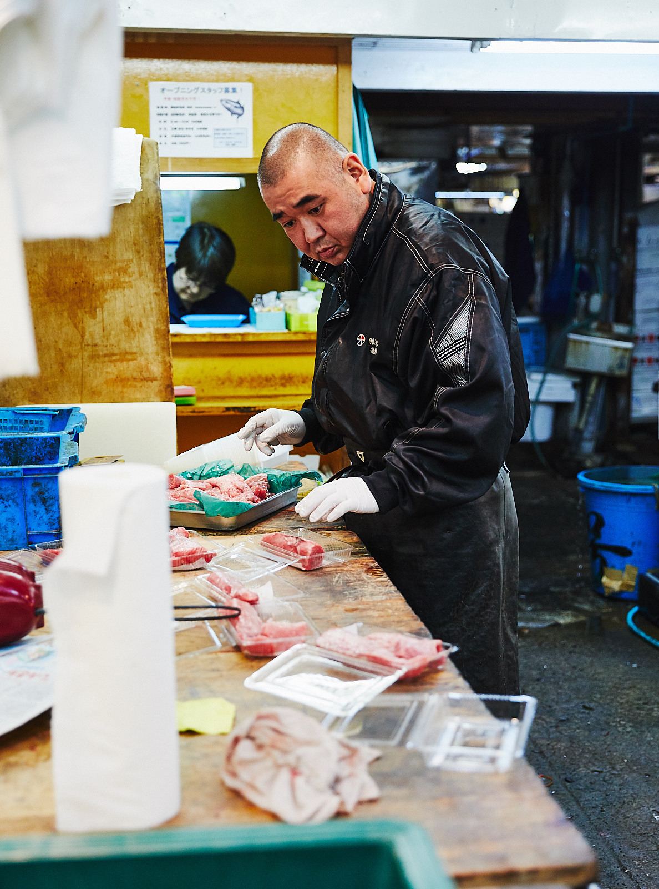 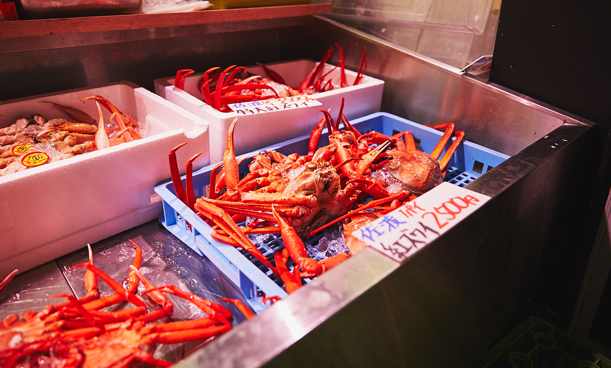 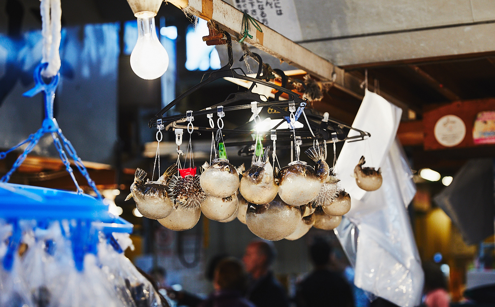 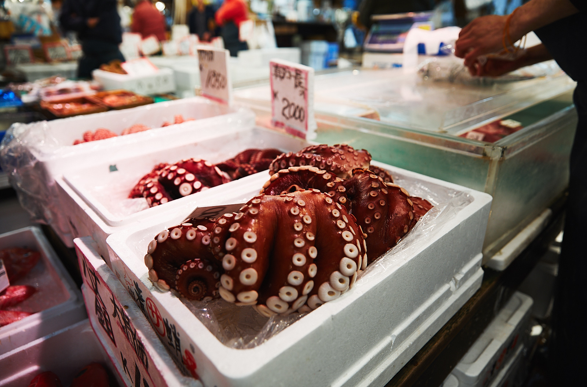 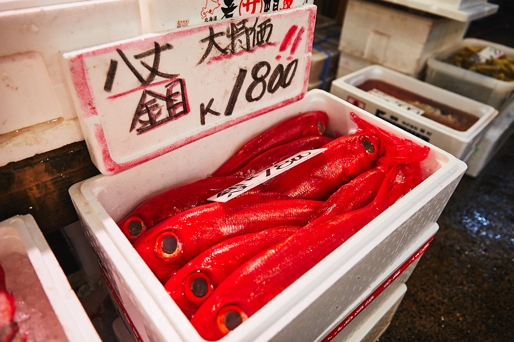
While the outer market wasn't as spectacular as the inner market, the rows and rows of sushi and seafood restaurants was still an impressive and certainly a mouth watering sight. Some of the best sushi restaurants in the city are said to be here commanding long lines that wind around the narrow alleys.
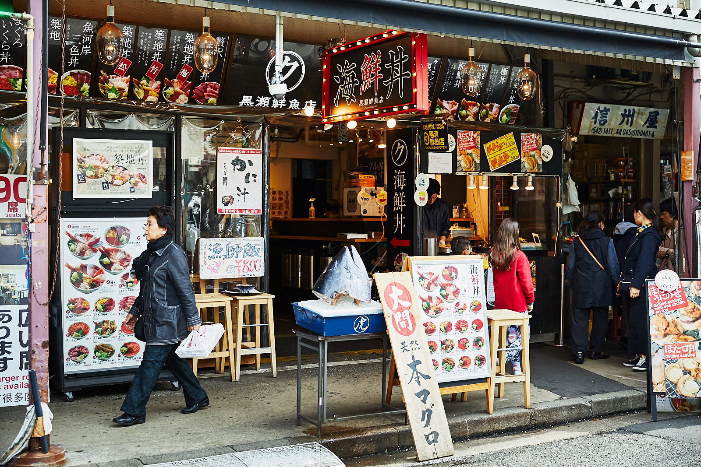 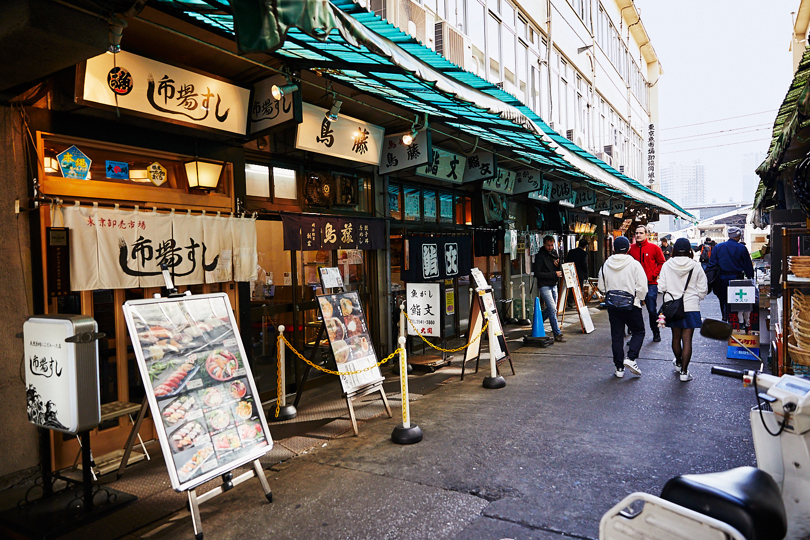
There is also a very famous tuna auction that happens in the market, however, the number of tourists that are allowed to participate is extremely limited. So apparently to get a chance of making the cut, it's recommended to line up around 3:00am. I ended up staying too far away from Tsukiji, and since the subway stops running at around midnight and doesn't start up until around 5:00am, I didn't get a chance to try my luck at watching the auction.
One more reason to come back!